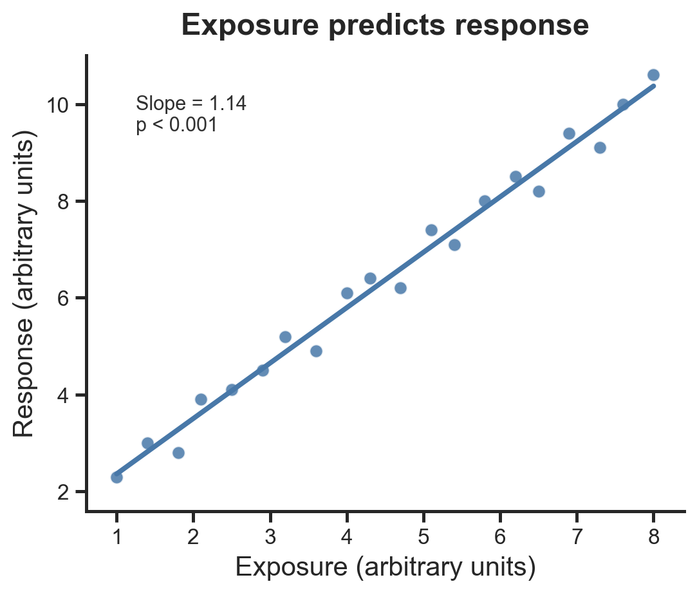

Continuous association
One Seaborn figure, one ordinary least-squares regression, one verification workflow.

Raw CSV→Exact producer→ReproFig master→Independent checks→Saved reproduction
Claim
Response increases with exposure in this synthetic dataset.
Analysis
ordinary least-squares regression
Verification
- display verified: pass
- figure reproduced: pass
- internally consistent: pass
- source linked: pass
- statistics independently verified: pass
Complete machine report: ../verification/exposure-response-verification-report.json
Exact producer code
This is a rendered copy of ../code/plot.py, not a shortened illustration.